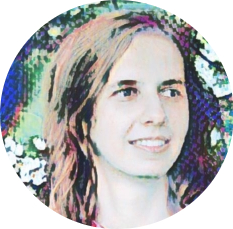

My name is Iryna (Ira) Korshunova. I am a 2nd-year PhD student in Machine Learning at
Ghent University.
In the past few years, I won a couple of Kaggle competitions,
was an intern at Grammarly and
Twitter Cortex, and wrote several papers.
For more details, please see my CV.